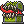
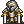
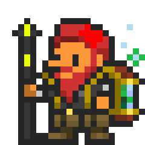

Welcome to Ornadex!
Post 1! |
Welcome to Ornadex! This server was created to help show information about different aspects of Orna and Aethric, two mobile games made by Northern Forge! This website is non-profit and is made by a broke college student who isn't very good at web design, so anticipate updates frequently! |
This site's most recent changes:
|  |
Cerus the UntamedDuration: April 1st to April 31st |
|
Cerus has fallen out of the skies yet again! In this event, the Cerus raid bosses give great adornments, in both crit and ward. Fight him in kingdoms and in the world! |
|
|  |
Legend of LyonesseDuration: April 10th to April 14th |
|
Trevelyan has returned! He sports a really interesting skillset and is challenging for new players! Fight him in your kingdom! In this event, there are two interesting raids, and a hard-hitting pet available for you to grab. |
|
Contact Me |
Discord: konq. Orna: Konq |
 |